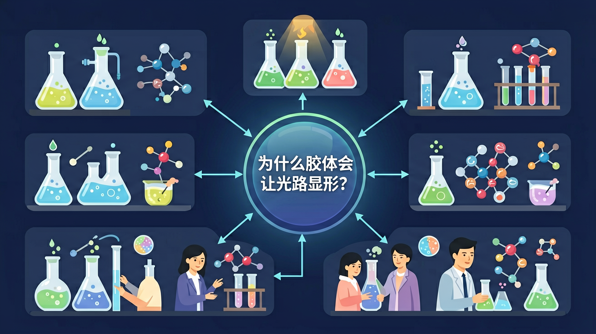

真实情境
生活中的丁达尔现象
小明在厨房煮鸡蛋时，注意到从窗户射入的阳光在蛋清溶液中形成了一道明显的光路。他想起物理课上老师提到过光在空气中的传播是看不到的，但在某些液体中却能观察到这种现象。
已有经验
学生已经学习过光的直线传播特性，知道光在均匀介质中沿直线传播
真正卡点
不清楚为什么光在某些液体中会形成可见光路，而在其他液体中却看不到
本课任务
探究胶体溶液与真溶液对光的散射作用的差异
为什么一束光穿过胶体会出现明亮光路，而穿过真正溶液却看不见？

先选一个你关心的问题。后面的例子、提示和 AI 学伴都会围绕这个问题来帮你推进。
选择或输入后，本课会围绕你的问题展开。
小明在厨房煮鸡蛋时，注意到从窗户射入的阳光在蛋清溶液中形成了一道明显的光路。他想起物理课上老师提到过光在空气中的传播是看不到的，但在某些液体中却能观察到这种现象。
学生已经学习过光的直线传播特性，知道光在均匀介质中沿直线传播
不清楚为什么光在某些液体中会形成可见光路，而在其他液体中却看不到
探究胶体溶液与真溶液对光的散射作用的差异
分散系由分散质与分散剂组成。按分散质粒子直径：<1 nm 为溶液，1–100 nm 为胶体，>100 nm 为浊液。溶液稳定透明，胶体较稳定可有丁达尔效应，浊液不稳定易沉降。分类看粒子大小，不看是否“看起来像水”。
产生丁达尔效应的分散系通常是？
制备胶体可用化学法（如水解）或物理法。胶体因吸附电荷而稳定，加入电解质、加热或异种胶体可聚沉。渗析可提纯胶体：胶体粒子不能透过半透膜，离子可以。不要把胶体聚沉与溶液中沉淀反应混为一谈，机制不同。
提纯胶体常用？
溶液与胶体都能透过滤纸，浊液常不能。胶体有丁达尔效应，溶液无；浊液可有散射但易沉降。用一张对照表记忆：粒子大小、外观、稳定性、特有性质、分离方法。判断题先估粒子尺度，再选效应。
能透过滤纸但有丁达尔效应的是？
本课任务：先用浓度模拟理解溶液中粒子均匀分散；再设计对照实验区分溶液与胶体（丁达尔、能否透过滤纸/半透膜）。
写清自变量、因变量和至少两个保持不变的条件，避免同时改变多个因素后无法归因。
至少记录三组带单位的数据或三个可复查的现象，不用“变大了”“更明显”代替证据。
用本课公式、粒子模型或受力关系解释趋势，并指出结论成立所依赖的模型条件。
换一个参数或真实情境预测结果，再用仿真检验；若不一致，回查变量、单位和边界条件。
分散系按分散质粒子直径分：溶液（<1 nm）、胶体（1–100 nm）、浊液（>100 nm）。胶体具有丁达尔效应，可用此与溶液区分。胶体粒子带电，电泳时可定向移动；加电解质可聚沉。制备如 Fe(OH)₃ 胶体常用饱和 FeCl₃ 滴入沸水。
通过实验探究掌握胶体的丁达尔效应、电泳和聚沉特性，理解分散系分类标准及其在实际中的应用。
Fe(OH)₃胶体制备实验中，将饱和FeCl₃溶液滴入沸水形成红褐色胶体，用激光笔照射可见明显光路（丁达尔效应）。
区分胶体与溶液时，先观察外观均一性，再用激光笔侧射观察光路，最后通过半透膜渗析验证粒子大小。
学生常误将CuSO₄蓝色溶液当成胶体，需强调胶体的丁达尔现象与颜色无关，且胶体外观与溶液同样透明。
课堂任务：请用“现象/文本/地图/实验数据 → 关键证据 → 学科解释 → 迁移应用”四步，重写一个关于「分散系：为什么胶体会让光路显形？」的新问题。
识别并写出本节核心定义、公式或分类标准。
把本课标准用于一个实验数据或真实生活场景。
设计一个反例，说明常见错误为什么站不住脚。
如果你能解释“为什么一束光穿过胶体会出现明亮光路，而穿过真正溶液却看不见？”，这节课就真正过关了。
鉴别溶液与胶体：光束通过出现光亮通路的是胶体。注意浊液不稳定、静置分层；胶体较稳定。聚沉可用加热、加电解质或互凝。
常见误区：常见误区是认为所有透明液体都是溶液，或把浊液当成胶体。用粒径和丁达尔效应区分。
能产生丁达尔效应的是？
记忆锚点：尺度锚点：溶液小到看不见，浊液大到会沉，胶体夹在中间会散光。
易错提醒：常见错误：把“透明”当成溶液的唯一标准。有些胶体也可半透明，关键看粒子尺度和丁达尔效应。
不要只看结论。动手改变变量后，再用一句话解释画面为什么变了。